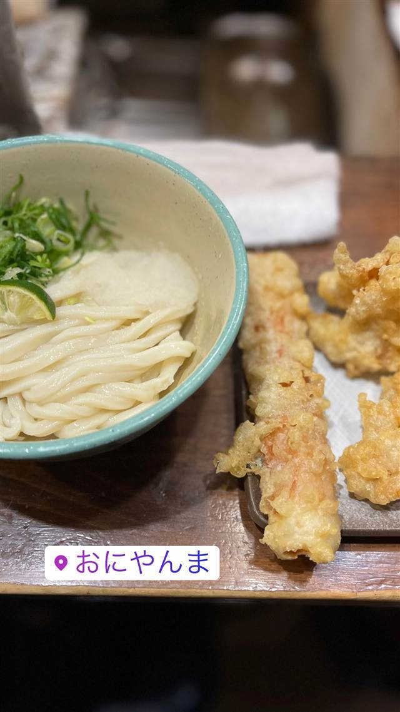

ステーキ＆ハンバーグ モンスターグリル 五反田店
最大32オンスのモンスターステーキ、部位ごとに鉄板温度を変えて焼く
ステーキ＆ハンバーグ モンスタ…
2014年11月にオープンした「ステーキ＆ハンバーグ モンスターグリル」の五反田店。穀物で240日以上肥育し成長ホルモンを使わない牛肉を使い、最大32オンス（約900g）の「モンスターステーキ」が名物で、部位ごとに鉄板温度を変えて焼き上げる。
TRIVIA
へえ、という話
- 名物「モンスターステーキ」は最大32オンス（約900g）にもなる
- ソースは鉄板の熱を利用して仕上げる仕組みになっている
| 創業 | 五反田店は2014年11月19日オープン。 |
|---|---|
| 系譜 | 「ステーキ＆ハンバーグ モンスターグリル」チェーンの一店舗（五反田本店・恵比寿店など関東に展開）。 |
| 看板 | モンスターステーキ（最大32オンス＝約900g） |
| こだわり | 穀物で240日以上肥育し成長ホルモンを使わない牛肉を使用。ステーキの部位ごとに鉄板温度を調整し、自家製ソース（OZ・和風・ガーリック・デミグラス・ねぎ塩の5種）と鉄板の熱を合わせて仕上げる。 |
| 予算 | 昼 ¥2,000～¥2,999 夜 ¥3,000～¥3,999 |
| 場所 | 五反田駅 東京都品川区西五反田1-25-2 |
| 注意 | アメリカンダイナー風の店内。テイクアウト対応あり。 |
食べたもの：ステーキ
NEARBY
近い店・同じ系統の店
-
 ★
醤油・中華そば 五反田駅
中華蕎麦 無冠（五反田店）
元プロボクサーの店主が作る、牡蠣の旨みを凝縮した塩そば
昼 ¥1,000～¥1,999 夜 ¥1,000～¥1,999
★
醤油・中華そば 五反田駅
中華蕎麦 無冠（五反田店）
元プロボクサーの店主が作る、牡蠣の旨みを凝縮した塩そば
昼 ¥1,000～¥1,999 夜 ¥1,000～¥1,999
-
 ピザ 五反田
PLANET 五反田
フランス修業のシェフが作るボローニャ地方の手打ちパスタ
ピザ 五反田
PLANET 五反田
フランス修業のシェフが作るボローニャ地方の手打ちパスタ
-

天ぷら・天丼 五反田駅 おにやんま 五反田本店 揚げたてとり天・ちくわ天をのせる立ち食い讃岐うどん 昼 ～¥999 夜 ～¥999 -
 そば 五反田
蕎麦五反 五反田
立ち呑みと座敷を併せ持つ、日本三大珍味のからすみそば
夜 ¥2,000～¥2,999
そば 五反田
蕎麦五反 五反田
立ち呑みと座敷を併せ持つ、日本三大珍味のからすみそば
夜 ¥2,000～¥2,999
-
 とんかつ 五反田駅
とんかつ 神楽坂さくら 五反田店
日本に100頭ほどしかいない稀少豚「桜山豚」の厚切りとんかつ
昼 ¥1,000～¥1,999 夜 ¥1,000～¥1,999
とんかつ 五反田駅
とんかつ 神楽坂さくら 五反田店
日本に100頭ほどしかいない稀少豚「桜山豚」の厚切りとんかつ
昼 ¥1,000～¥1,999 夜 ¥1,000～¥1,999
-
 二郎系(インスパイア) 五反田駅
ラーメン豚山 五反田店
家系「町田商店」系列が手がける、二郎系初心者向けの一杯
昼 ～¥999 夜 ～¥999
二郎系(インスパイア) 五反田駅
ラーメン豚山 五反田店
家系「町田商店」系列が手がける、二郎系初心者向けの一杯
昼 ～¥999 夜 ～¥999